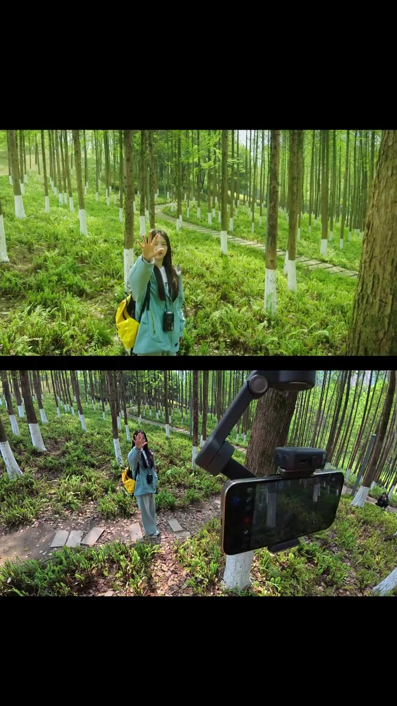
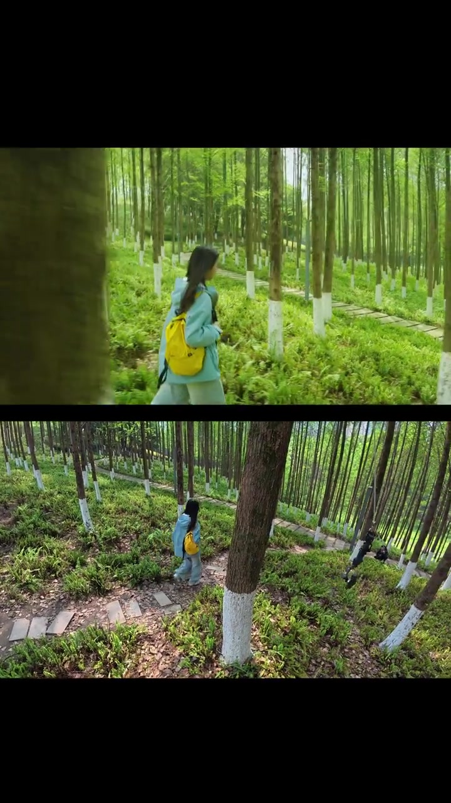
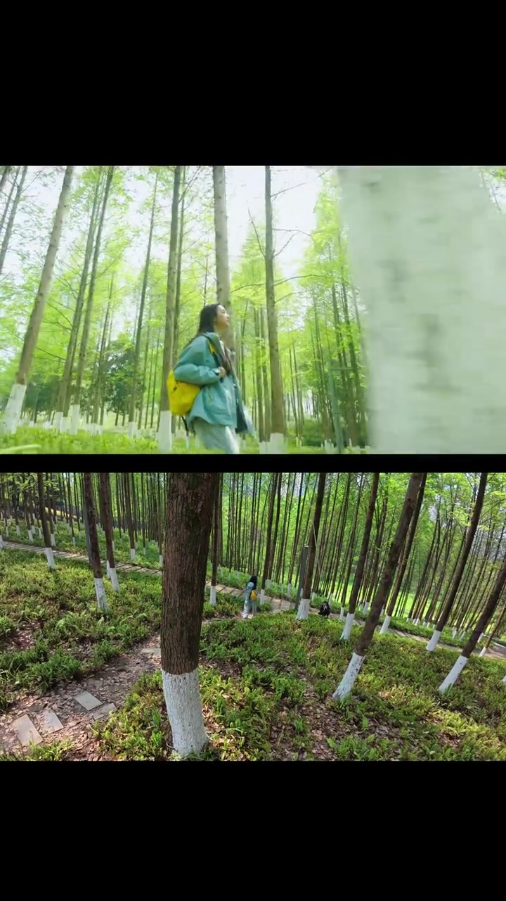
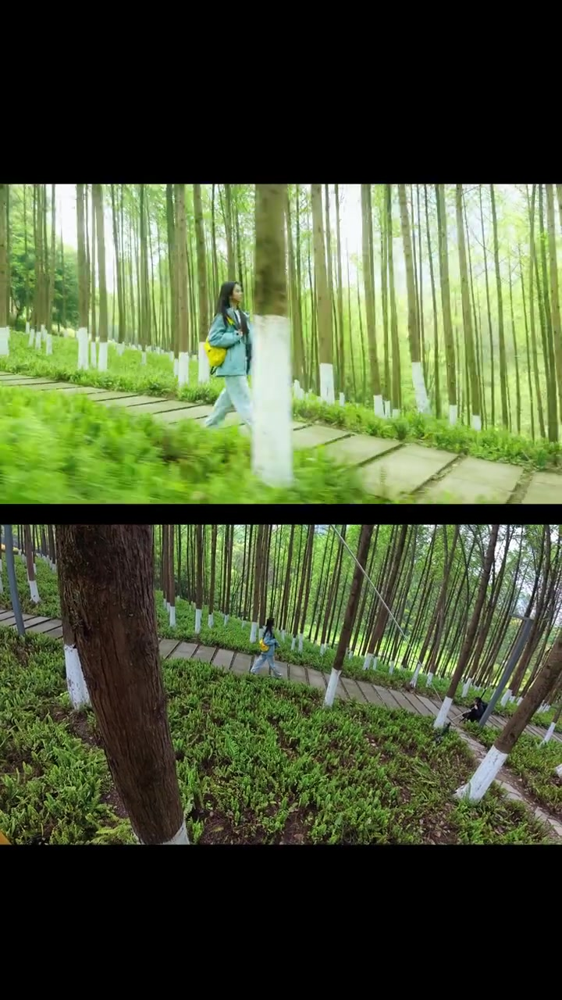
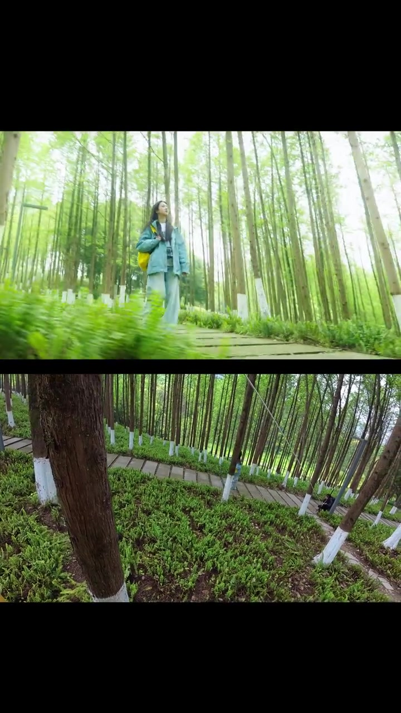
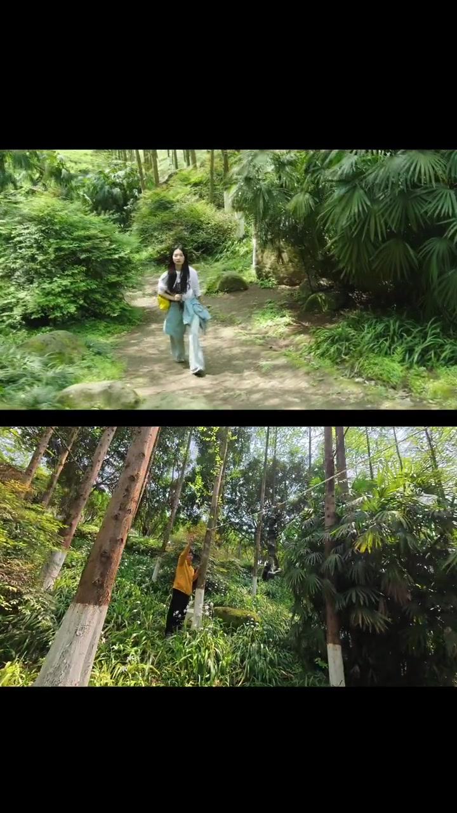
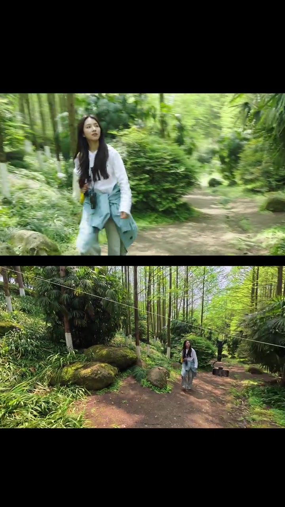

开场 · 00:00
先甩出「画面」和「怎么拍出来的」
视频几乎没有可辨口播，整段以配乐推进。笔记文案点题：一根绳子加上手机稳定器的人脸追踪，还能这样玩。开场就是上下分屏——上方是穿浅蓝外套、背亮黄背包的女生在林间石板路上举手正对镜头；下方从树干旁露出横置手机与稳定器，屏幕里同步预览同一人物。
本片人声几乎被配乐盖住。Whisper 分段无法可靠识别口语，页末转录按原始分段保留，听不清处标记为「[听不清]」。正文依据画面、分屏结构与笔记文案展开，不补写视频未说出的口播。

中段推进 · 00:04
人物沿石板路远去，机位仍咬着她
下一组镜头里，女生背对镜头沿石板路走进白漆树干密布的林间。上方是跟在身后的中近景，下方换成更高、更远的俯角，同一条小路在蕨类植被间蜿蜒。稳定器人脸追踪让主体始终落在画面中心附近，即使她在走、机位在动。

侧面与高机位 · 00:08
侧向走过、再抬到俯视，电影感靠「相对运动」
画面切到侧面：前景树干虚化，人物横向走过；下方仍是俯视石板路，主体变成远处一个小黄点。随后侧面更开阔，路径对侧还能看见坐在树旁的人——说明这不是单机「怼脸」，而是在有空间纵深的林道里做移动镜头。


关键道具露脸 · 00:12
绳子终于进画：手机为什么能「飞」
宽镜头里，一条细线斜穿林间上空；稍后橙色上衣的人在树旁操作，细线横过画面。结合标题里的「一根绳子」与话题标签「滑轨」「让手机飞」「会飞的 Mobile7P」，可以读出玩法：用绳索给手机稳定器一条可滑动的轨迹，再靠人脸追踪锁住主体，做出类似滑轨/飞猫的运镜。
补充资料：画面可见绳索与操作者，但视频未逐步口播参数（张力、挂点、速度）。以下为基于可见画面与笔记标签的操作还原，不是作者逐步口授。


收尾 · 00:15
迎面走来收束，氛围感闭环
最后一组切到更近的迎面行走：外套系在腰间，黄包带仍在肩上；下方宽景里她走在苔藓岩石旁的土路上，绳线还挂在林间。整段约 17 秒，没有逐步教程字幕，而是用「成片 / 幕后」反复对照，让观众一眼明白：人脸追踪负责「跟住脸」，绳子负责「让机位会飞」。

这一镜下来发生了什么
作者用约 17 秒分屏短视频展示：大疆 Mobile 系列手机稳定器开人脸追踪，配合绳索滑轨式移动，在林间拍出稳定、有纵深的氛围感成片。语音几乎不可辨；信息主要来自画面对照与笔记文案/话题标签。